Марки авто/ Ferrari
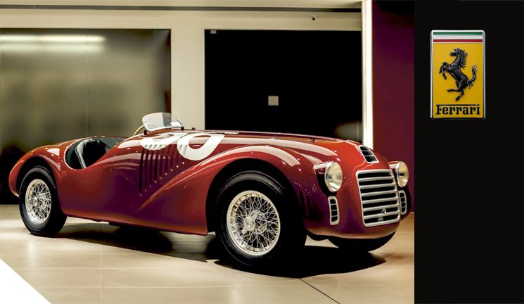


FERRARI - дизайн, мечты и технологии! Непросто найти человека, который не знает это имя, величие которого в автомобильном мире сложно переоценить. Все началось с того дня, когда 8 сентября 1908 года юный десятилетний мальчишка с замиранием сердца следил за гонкой “Коппа Флорио” и гоночным кумиром Италии - Феличе Надзардо, выступавшим на заводском ФИАТ... В тот день он понял, что непременно станет автогонщиком и будет выступать в заводской команде ФИАТ... А спустя почти 40 лет родилась автомобильная марка «Феррари». Тогда Энцо проехал по улицам Маранелло за рулем первого автомобиля, который впервые носил его имя. Это был 125 S... Это был первый шаг в великое будущее.Произошло это 12 марта 1947 года. Сегодня марка - один из самых успешных и прибыльных автомобильных брендов в мире, производящий широкую линейку спортивных автомобилей класса люкс. За плечами компании множество побед в автоспорте, легендарная история в Формуле-1, Ле-Мане. Поклонники марки и сегодня мечтают о Ferrari GТО 1984 года или Ferrai 348 GTB начала 90-х годов, а также множестве других удивительно красивых и быстрых автомобилей. «Феррари» - это бескомпромиссное воплощение скорости в металле, красоты в форме и самых современных технологий в своих инженерных шедеврах на четырех колесах. «Феррари» - один из тех последних могикан, кто устанавливает под капот своих серийных моделей великолепный атмосферный V12...
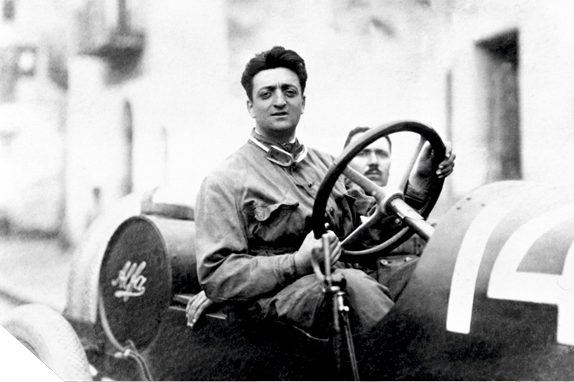
ЭНЦО ФЕРРАРИ
Когда-то, будучи юным, Феррари хотел стать оперным певцом. Видимо, поэтому моторы Феррари поют, исполняя по-настоящему великолепные арии, достойные лучших оперных театров. Также он хотел стать журналистом и хорошо писал на протяжении всей своей жизни, причем журналистом Энцо поработал, устроившись в 1914 году спортивным обозревателем в La Gazzetta dello Sport где писал о футболе. Как мы писали ранее, зерно любви к автоспорту попало в плодородную почву в десятилетнем возрасте Энцо: монстром, вдохновившем его, был FIAT победителя. В эту компанию он и пытался устроиться пилотом после Первой мировой, но потерпел неудачу. Дебют Феррари — гоночного пилота — состоялся в 1919 году за команду Costruzioni Meccaniche Nazionali в гонке «Парма - Поджо-ди-Берчето», в которой он занял четвертое место. В гонках как пилот Энцо звезд с неба не хватал, и первая победа к нему пришла лишь в 1923 году на трассе Савио, а основой его успеха был не просто талант, а прежде всего огромный труд: «Работая без отдыха, не успеваешь думать о смерти». Всю жизнь Комендаторе пахал, в том числе создавая автомобильные шедевры для дорог общего пользования, так необходимые для развития его гоночной истории: «Всё в мире, не связанное с гоночными автомобилями, меня совершенно не интересует».
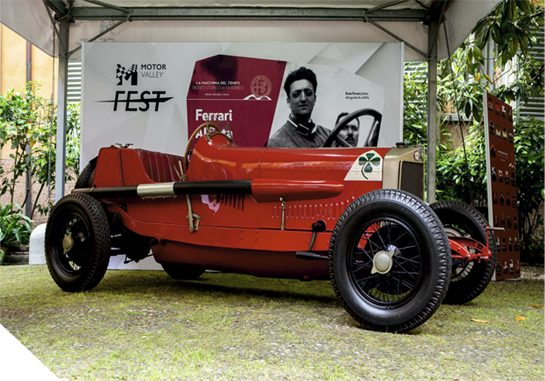
СКУДЕРИЯ ФЕРРАРИ
В конце 1929-го Феррари — на тот момент не только известный пилот, но и успешный дилер Alfa Romeo — организует свою собственную команду, которая и превратилась в подлинный смысл жизни Энцо. Сразу же он привлек хороших спонсоров и поставщиков, нанял именитого конструктора из FIAT Витторио Яно. За рулем машин его команды оказался Джузеппе Кампари — итальянская звезда автогонок второй половины 20-х, Энцо раскрывал юные дарования и вел Scuderia Ferrari к ее величию! Результаты команды впечатляли: достижения иногда превосходили результаты заводской команды Alfa Romeo (в довоенные годы пилоты Феррари выступали на машинах Alfa Romeo). В итоге в 1938-м Энцо приглашают на пост директора «Альфа-Ромео». Проруководив заводской командой «Альфы» около года, Энцо вернулся к работе над своей командой, при этом по заключенному с Alfa Romeo контракту он не мог 4 года выступать под собственным именем. По этой причине Энцо создает компанию Auto Avio Custruzioni, которая на бумаге занималась разработкой авиационных комплектующих. Но в гости к Энцо пришел молодой человек, звали которого Альберто Аскари, и обратился с заказом на автомобиль для «Милле Милья» 1940 года. Это был сын Антонио Аскари, погибшего друга Энцо. Так родился Auto Avio Construzioni 815 — первый автомобиль фирмы, которая еще не называлась Ferrari.
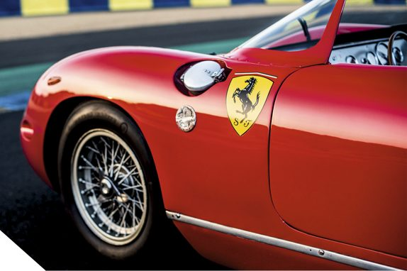
ЭМБЛЕМА СКУДЕРИИ
Вздымающийся на дыбы жеребец — герб Франческо Баракка, главного итальянского летчика — аса Первой мировой. Мать летчика графиня Паолина Бьянколи, после победы Энцо на трассе в Савио предложила использовать ему изображение чёрного гарцующего жеребца, которое было на фюзеляже самолёта её сына, в качестве логотипа для его гоночной команды, считая, что этот символ принесёт удачу. Энцо принял предложение, внеся некоторые изменения (он добавил жёлтый фон — цвет родной Модены и поменял положение хвоста жеребца, сделав его направленным вверх, что символизировало оптимизм и стремление к победе), и стал использовать эмблему. Впервые эмблема появилась на его автомобилях в том же 29-м году, на его Alfa Romeo. Есть распространенная версия появления вздыбленного жеребца на самолете у Франческо: рассказывают, что он позаимствовал его с самолета сбитого им немецкого летчика, на борту которого красовался герб Штутгарта с поднятым на дыбы жеребцом.
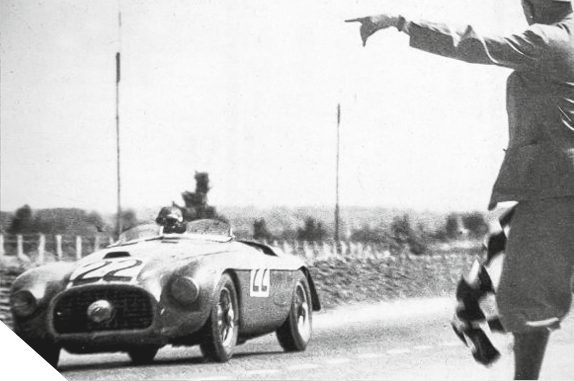
LE MANS И ПЕРВЫЙ ДОРОЖНЫЙ FERRARI
26 июня 1949 года Ferrari 166MM c американцем итальянского происхождения Луиджи Чинетти выигрывает 24-часовой марафон в абсолюте, с первой попытки! Удивительный результат: причем экипаж хоть и состоял из двух человек, вторым пилотом был Питер Митчелл-Томпсон II - барон Селсдон, который являлся и владельцем автомобиля. Но в общей сложности барон за все 24 часа провел за рулем менее полутора... Этот Феррари стал знаковым не только благодаря своей победе, но и потому, что послужил основой для первого гражданского Феррари для дорог общего пользования - Ferrari 166 Inter. Всего на сегодняшний день Феррари побеждали в абсолюте одной из самых престижных гонок на выносливость 12 раз. После победы 1949 года первое место вновь взял Ferrari 375 Plus в 1954 году, а с 1958 по 1965-й Феррари доминировали, побеждая каждый год, кроме 1959-го, когда победу одержал Aston Martin DBR1... В 1965 году Ferrari 250 LM заняли весь подиум. В 1966 году череду побед Феррари прервал Форд и об этой истории сняли полнометражный фильм «Форд против Феррари». В 2023 году Ferrari прервали паузу, затянувшуюся на 58 лет, и победили в сотой юбилейной гонке 24 часов Ле-Мана. Это был гиперкар Ferrari 499P, который закрепил успех и в следующем, 2024 году.
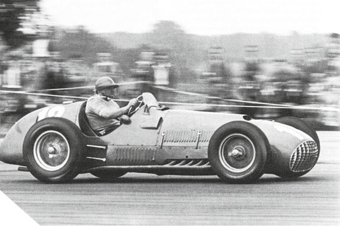
ЛЕГЕНДА ФОРМУЛЫ 1
Старая эпоха гонок Гран-при закончилась в 1950-м, когда весной на английской трассе Сильверстоун состоялся первый этап чемпионата мира по новой формуле техрегламента. Теперь мы знаем его как «Формула-1». Причем в этом первом этапе будущей королевы автоспорта «Феррари» участия не принимала, но со следующего этапа начался впечатляющий, наполненный настоящей страстью великий роман Ferrari и «Формулы-1». Ни одна команда, кроме «Скудерии», не принимала участия во всех без исключения чемпионатах мира! У Ferrari больше всего побед в истории! Первую гонку для «красных» выиграл Хосе Фройлан Гонсалес в 1951-м, а через год Альберто Аскари принес Коммендаторе первый чемпионский титул. По сей день Ferrari c огромным отрывом является лидером «Формулы-1» как по выигранным Гран-при (1034 старта — 240 побед), так и по титулам: 16 в командном, 15 в личном зачетах!
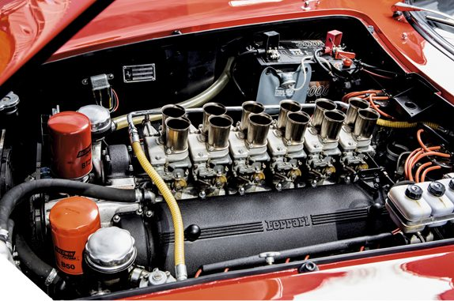
12 ЦИЛИНДРОВ FERRARI
Двигатели V12 — душа бренда, которой пропитана история компании с ее первой модели: сердцем Ferrari 125 S был V12, с которого началась эра Colombo. Мотор был разработан инженером Джоаккино Коломбо. Это был маленький двигатель объемом всего 1,5 литра; со временем он дорос до 3-х и заложил базу — код ДНК всех спортивных моторов компании. 1950-1960-е годы ознаменовались успехами в Ле-Мане, благодаря надежности новых моторов. Двигатели Lampredi и серия «Long-block» V12 позволили 250-м доминировать на гоночных трассах. Конечно же, в Формуле-1 моторы о 12 цилиндрах принесли множество славных побед. Включая оппозитные (Flat-12) двигатели, Феррари использовали 12 цилиндов в «королеве автоспорта» 29 лет. Болид Ferrari 412 T2 1995 года стал последним в истории Скудерии, оснащенным легендарным двигателем V12. В 90-е для дорог общего пользования выпускались моторы типа F116/F133 (для 456 GT и 550 Maranello). 2002 год ознаменовал начало эпохи лучшего атмосферного V12 — F140, который мир увидел в подкапотном пространстве космического гиперкара Enzo. Архитектура F140 постоянно совершенствуется: он украшал и фантастический La Ferrari, и различные лимитированные серии, а сегодня в производственной линейке поет под капотом Ferrari 12Cilindri и Ferrari Purosangue, продолжая традицию бескомпромиссных атмосферных монстров.
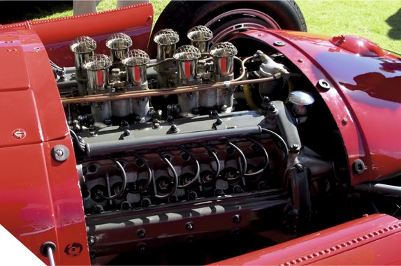
8 ЦИЛИНДРОВ FERRARI
Двигатели V8 также внесли огромный вклад в славу Ferrari: это и гоночные технологии, и развитие великолепной гражданской линейки суперкаров компании, и, конечно же, абсолютно легендарные модели, как 288 GTO и F40. Первым дорожным автомобилем Ferrari с V8 стал Dino 308 GT4, выпускавшийся с 1973 по 1980 год. Его сердце обладало объемом 2,9 литра и мощностью около 250 сил. С 85-го по 89-й производится Ferrari 328 c 3,2-литровым V8 мощностью 280 л.с.. С 89-го по 93-й год мир украшала 348-я, а в 94-м ей на смену пришла Ferrari F355 c новым 3,5-литровым V8 с пятью клапанами на цилиндр, мощность мотора — 380 л.с.. На смену ей приходит 360 Modena, в которой V8 «подрос» до 3,6 литра и выдавал уже 400 сил. С выходом F430 свет увидел совершенно новый атмосферный V8 F136 — наверное, лучший атмо-V8 в истории. Надежный, производительный агрегат с очень красивым звуком размещался в подкапотном пространстве также Ferrari California и потрясающего Ferrari 458 Italia. С 2015-ого года эра атмо-V8 Ferrari подошла к концу: «Италию» на конвейере сменил Ferrari 488 GTB c 3,9 литровым V8 c двойным турбонадувом, а его версия Pista стала самым мощным дорожным Ferrari с V8 в истории. Сегодня V8 представлен под капотом Ferrari 849 Testarossa - гибрид выдает мощность в 1050 л.с..
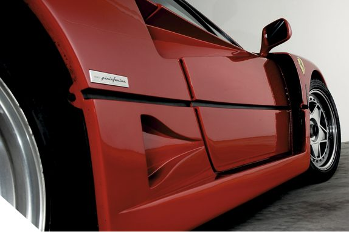
FERRARI F40
Без преувеличения великий автомобилиь, который появился в 80-х — суперкар, приуроченный к 40-летнему юбилею марки, был последним, лично одобренным самим Энцо Феррари. Над автомобилем работал знаменитый конструктор Никола Матерацци, великолепный дизайн создал Пьетро Камарделло из Pininfarina. F40 появился благодаря сложившимся обстоятельствам. В Ferrari подготовили 6 экземпляров Evoluzione на основе 288 GTO для участия в раллийной группе Б, но после череды трагедий категорию запретили. Тогда программу решили продолжить и превратить «Эво» в экстремальный и спартанский дорожный автомобиль. F40 получился по-настоящему аскетичным: по сути, это был гоночный автомобиль, минимально адаптированный для дорог общего пользования, с максимально спартанским салоном и очень низким дорожным просветом. Шасси с двойными поперечными рычагами. За гоночными креслами продольно установлен 478-сильный V8 объемом 2,9 литра с двумя «улитками». Пиковые 577 Нм доступны уже при 4000 об/мин. Характер у автомобиля был с норовом и требовал уверенных навыков пилотирования. Суперкар разошелся тиражем в 1131 экземпляр.
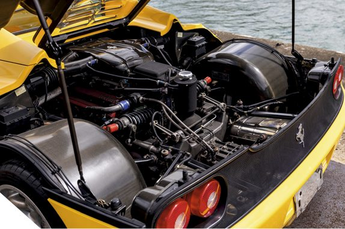
FERRARI F50
Ferrari F50 — совершенный и безумный суперкар, флагман компании, выпущенный в количестве всего 399 штук. Великолепный дизайн, наполненный потрясающим стилем; невероятно красивый, можно сказать, душераздирающий звук атмосферного V12, великолепная динамика и потрясающая управляемость — он был одним из быстрейших автомобилей в мире не только на прямой, но и на треке. Перед нами болид для дорог общего пользования. Он выполнен на основе карбонового монокока, подвеска - на двойных поперечных рычагах, электронно управляемые амортизаторы Bilstein установленны по схеме push-rod, но самое впечатляющее — это мотор V12 Tipo F130. Основанный на 3,5-литровом формульном моторе, он получил объем 4,7 литра и пиковую отдачу — 519 л.с. при 8000 об/мин, а крутящий момент — 471 Нм при 6500 об/мин. В F50 нет гидроусилителя руля, вакуумного усилителя тормозов, ABS и трекшн-контроля.
На домашнем треке Fiorano у него прекрасное время — 1 минута 27 секунд, на 2,6 секунды быстрее, чем F40.
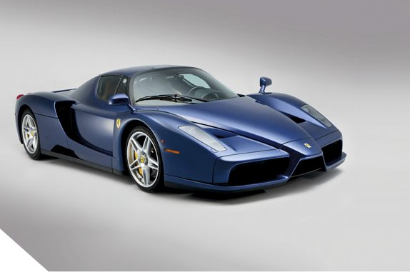
FERRARI ENZO
Ferrari Enzo — еще один невероятный флагман компании, выпущенный в количестве 400 штук в честь Энцо Феррари. Великолепный дизайн, разработанный Кеном Окуямой, тогдашним главой отдела дизайна Pinifarina, всем своим видом, начиная с ярко выраженного носа болида, говорит об отсылке к «Формуле-1». Это отражено также и в технологиях, примененных в работе над машиной, например, кузове из углеродного волокна, механической коробке передач с автоматическим переключением в стиле «Формулы-1» и дисковых тормозах из керамического композита, усиленного карбидом кремния. Отдельного внимания заслуживает фантастический V12 F140, который, как мы уже писали, появился впервые именно в Enzo, положив начало самым прекрасным атмосферным V12 в истории компании. В Enzo его объем составляет 6 литров, мощность в 660 л.с. достигается на 7800 об/мин, крутящий момент — 657,57 Нм при 5500 об/мин. На основе Enzo было выпущено две версии предназначенные исключительно для использования на треке: FXX и FXX Evoluzioni. В первом варианте мотор развивал 800 сил, а во втором — 860, при этом максимальная скорость Evoluzioni составляла 365 км/ч...
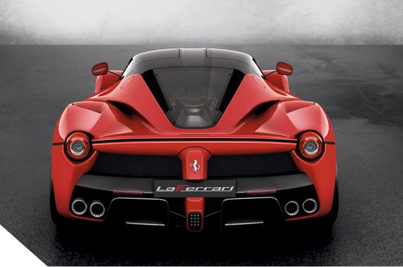
FERRARI LA FERRARI
LaFerrari с итальянского переводится как «Феррари» — то есть просто «Феррари Феррари». Так и есть: это апогей духа Феррари. Вы помните, что начал Энцо с 125 S, который ускорял V12. Здесь, в LaFerrari, V12 — квинтэссенция флагманских гиперкаров марки в подкапотном пространстве. Да, атмосферник F140 FE выдает здесь 800 сил, а в более современном среднемоторном Daytona SP3 уже 840, но в общей сложности гибридная силовая установка вместе с электромотором в LaFerrari разивавала уже 963 л.с. и 900 Нм крутящего момента, отсечка находится на умопомрачительных для гражданского V12 тех лет 9250 оборотах в минуту! Двигатель работает в паре с преселективным семиступенчатым «роботом», дополнен электромотором и системой рекуперации кинетической энергии KERS, которая пришла из Формулы-1. Дизайном гиперкара занималась собственная студия под началом Флавио Манцони. Карбоновый монокок с увеличенной на 27 процентов жесткостью на кручение разработан техническим директором формульной команды Рори Бирном. LaFerrari — это первый гибрид в истории бренда и на тот момент мощнейший дорожный автомобиль марки.
С 2016 по 2018 год было выпущено 210 экземпляров Ferrari LaFerrari Aperta в честь 70-летия компании.
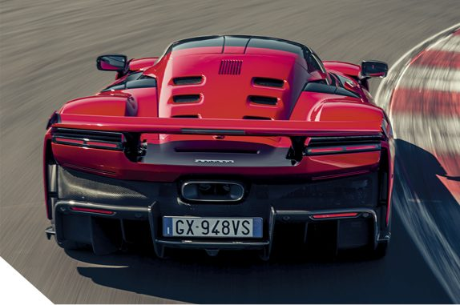
FERRARI F80
Ferrari F80 — новая глава в истории гиперкаров компании: впервые в подкапотном пространстве флагманской модели поселился турбированный V6. На вопрос, почему инженеры предпочли трехлитровый V6 с двумя турбокомпрессорами каноничному атмосферному V12, развернутый ответ дал Энрико Галлиера, директор по маркетингу и коммуникациям Ferrari: «Мы задумались, будет ли использоваться самый культовый двигатель (V12) или самый производительный (V6), и решили взять самый производительный. Это то, что мы всегда делали с нашими суперкарами, — просто посмотрите на F40 и его V8 с двумя турбокомпрессорами.» Ускоряет автомобиль гибридная система общей мощностью 1200 л.с., что делает этот Ferrari самым мощным в истории. Разгон 0–100 км/ч занимает 2,15 секунды, 0–200 км/ч — 5,75 секунды, а максимальная скорость — более 350 км/ч. Дизайном автомобиля занимался так же Флавио Манцони; стилистика выполнена в современном визуальном языке бренда. Кузов — углепластиковый монокок с алюминиевыми подрамниками спереди и сзади, есть дополнительный подрамник для тяговой батареи. Длина — 4840 мм, ширина — 2060 мм, высота — 1138 мм, колёсная база — 2665 мм. До 2027 года планируется выпустить 799 экземпляров.
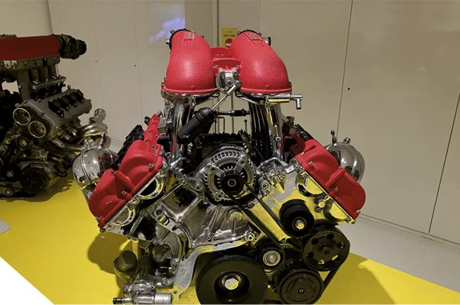
V8 FERRARI F136
Двигатель V8 Ferrari F136 — это легендарный атмосферный бензиновый мотор семейства Ferrari-Maserati, производившейся с 2001 по 2019 год и прославившийся своим великолепным звучанием, надежностью, ярким характером и производительностью.
Основные модификации: 4.3 литра: выдавал 490-510 л.с., устанавливался на Ferrari F430 (версия F136 E/IB). 4.2-4.7 литра: базовая версия на 390-460 л.с., которая использовалась на моделях Maserati и Alfa Romeo 8C. 4.5 литра: модификация с непосредственным впрыском, 570-605 л.с., устанавливалась на семейство Ferrari 458.
F136 - V8 с развалом блока 90 градусов, вариантами систем смазки с сухим и мокрым картером, ГРМ: цепной привод, по 4 клапана на цилиндр (DOCH) и системой регулировки фаз газораспределения.
За основу стола, который мы выпустили, использован F136 E, применявшийся на среднемоторном суперкаре Ferrari F430.
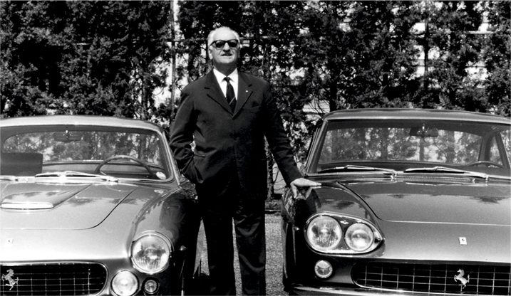
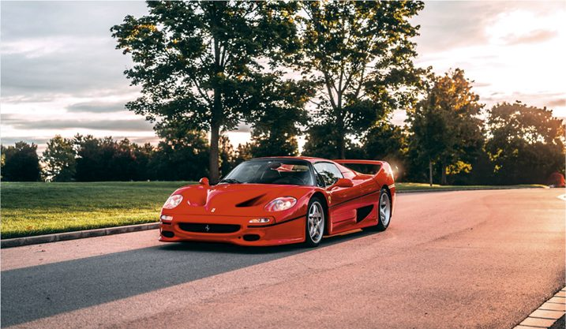
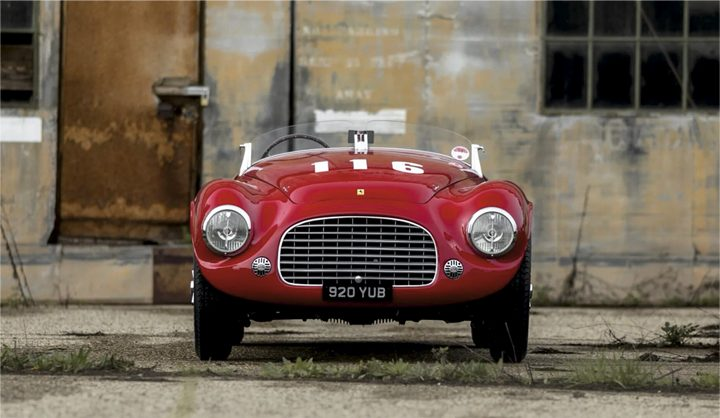